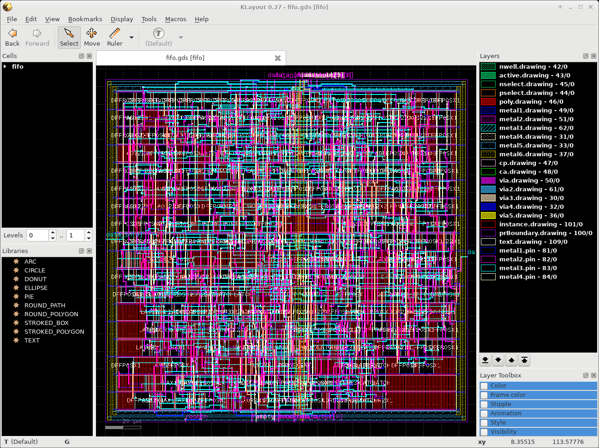

The tutorial directory contains several input files that we will use with KLayout. We start with the conversion of Cadence OpenAccess technology data. The set of files consists of an ASCII OpenAccess techology file, the display.drf and the OpenAccess GDSII layer map file. First we start KLayout reading the import_tf.rbm Ruby code that implements a simple tech converter. We also have to provide a sample GDSII input file otherwise the startup will fail with an "error no view selected". I've prepared a Makefile for you to make typing easier - just run "make setup". This will execute the following command:
klayout -rm input/klayout/import_tf_27012017.rbm input/gds/fifo.gds
Now you should see this KLayout window on your screen:
Then we will run the tech converter. Please execute now "File>Import Cadence Techfile". As a result you get a window that allows you to define the input technology file for the converter. Please select the file "NCSU_Techlib_tsmc02_laydefs.tf" that can be found in the subdirectory "input/oa".
Please note that the technoloy converter will automaticly pick up the the file "display.drf" found in the same directory. It will also search for files with the extension ".layermap" and if found it will also read it und use it for the conversion. If everything went fine you should see this window on your screen:

The Layers window shows the layer names found in the OA technology file. If a streammap file was used then you will also see meaningfull GDSII layer numbers and datatypes. If there was no map file then these numbers are just artificially calculated. The layers should also show the expected layer pattern that were found in the "display.drf" file.
In the next step we will save a copy of the KLayout layer data. Please run "File>Save Layer Properties" and enter "demo.lyp" as output name.
Were are done with this step, so enter now "File>Exit" to terminate this session. You can take a look at "demo.lyp" file. It uses XML format and contains all layer relevant data used by KLayout.
From now on we will use this file that you have created. Using your prefered editor please change the top of the "Makefile" to point to your new file:
#LAYPROPS=output/df2-0.24.10-1.1.lyp #LAYPROPS=output/df2-0.27-0.lyp #LAYPROPS=output/oa-0.27-0.lyp LAYPROPS=demo.lyp
We will now test the new technology by reading a GDSII example file. Please execute "make gds" in your shell window. This will run the command:
klayout -l demo.lyp input/gds/fifo.gds
If successful you will get this output:
Zoom into the upper left corner using the right mouse button and enter the "1" hotkey to see this detail:
With the "*" hotkey you can display the full hierarchy of this layout:
Were done with this example. Please exit KLayout. In the next step we want to display a LEF/DEF-based design. Please enter "make lefdef" in your shell window. This will execute this command:
klayout -l demo.lyp \ -rd layermap="../klayout/cmos180.encmap" \ -rd leftech="../lef/cmos180.lef" \ -rd lefcell="../lef/cmos180osu.lef" \ -rd def="input/def/fifo.def" \ -rx -rm input/klayout/load_lefdef.rb
The main design file is "input/def/fifo.def". It contains the top level of the design. It useds cell definitions that are defined in "cmos180osu.lef". This file is looked up relative to the location of the DEF file. We also have to read the LEF techology file called "cmos180.lef". This file contains the layer definitions, connectivity informations and basic design rule data in the LEF/DEF space. The Ruby code in "load_lefdef.rb" tells KLayout to read the data from the at command level defined variables.
Now we have to take a look at the "cmos180.encmap" file. The format that the file uses is described in the Cadence Encounter System User Guide in the section Importing and Exporting Design. Let's take a look at the details here:
DIEAREA ALL 100 0 #COMP ALL 101 0 metal1 NET 49 0 metal1 SPNET 49 0 metal1 PIN 81 0 NAME metal1/PIN 81 0 metal1 LEFPIN 81 0 NAME metal1/LEFPIN 109 0 metal1 LEFOBS 49 5 via VIA 50 0 via LEFOBS 50 5This file maps the LEF/DEF constructs into GDSII layer and datatypes. The "DIEAREA ALL" will put the data into GDSII layer 100 with datatype 0. This layer is already defined in KLayout as layer with the name "prBoundary.drawing - 100/0". The lines starting with a layer name do the mapping using a function name. NET maps the regular routing shapes and SPNET does it for the special routing. PIN defines the layer and datatype for the DEF pins. LEFPIN sets it for the LEF pins. LEFOBS defines the layer target for the LEF obstructions. The NAME directive instructs the tool to generate a text label either for DEF pins or for LEF pins.
Lines starting with via translate via data. Either for VIA into the target via drawing layer for the DEF top level or using LEFOBS as via obstructions shapes for the LEF cell data.
Here is the result after reading the LEF/DEF data:
Zoom into the upper left corner using the right mouse button and enter the "1" hotkey to see this detail:
Enter the hotkey "*" to see the full details of the LEF cells.
Run "File>Setup" and select the topic "Display>Texts". Here enter for "Text Font" Times and set the "Standard Text Size" to 0.2. Apply text scaling and also "Show properties". Once you click on Apply you will see this result - the user properties containing the DEF net name will show up on the screen.
Then run "File>Setup" and select the topic "Display>Cells". Here enter for "Cell Box Color" instead of "Auto" the value for "#31" and apply the change. This will give you a result simiiar to this one:
q. e. d.